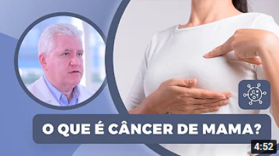
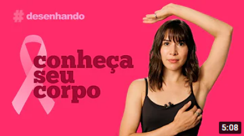
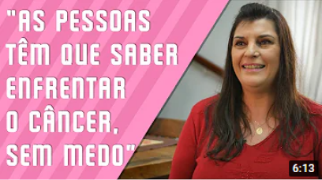
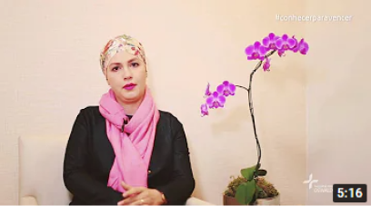

Exame
A partir dos 40 anos de idade, as
mulheres devem realizar
anualmente a mamografia,
exame que permite a
identificação de lesões não
palpáveis. O câncer de mama atinge principalmente mulheres
em idade em torno da
menopausa (entre 45 e 55 ano).
Objetivo da Campanha
A data é celebrada anualmente,
com o objetivo de compartilhar
informações e promover a
conscientização sobre a doença;
proporcionar maior acesso aos
serviços de diagnóstico e de
tratamento e contribuir para a redução da mortalidade.
Exame de Toque
Passo a Passo
Caso tenha Testado Positivo
clique em ajuda
Videos Informativos
Oque é câncer de mama?
Outubro Rosa!
Depoimentos
A história de Vania Gori
A história de Suzete
Não Desista!
Descobri o câncer de mama em 2012,através do exame preventivo. O desespero foi imenso, não sabia se chorava, ria ou se enfrentaria a doença de cabeça erguida. Ergui a cabeça, tirei forças de onde achava não ter,busquei fé e segui em frente. Entre quimio e rádio foram inumeras sessões. Hoje, oito anos após a tempestade, estou curada, feliz e semprebusco dar palavras de amor e fé, toda vez que me deparo com pessoas nessa situação.
Depoimento de: "Sueli Natália Tiski de Oliveira"
Contribua para a causa